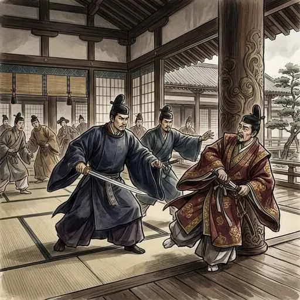
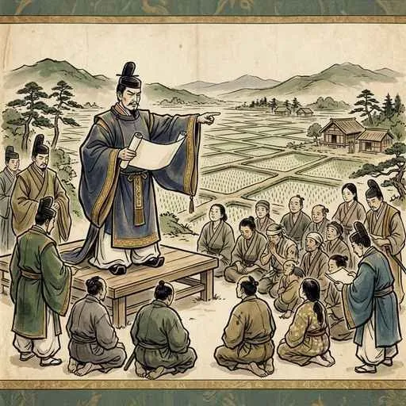
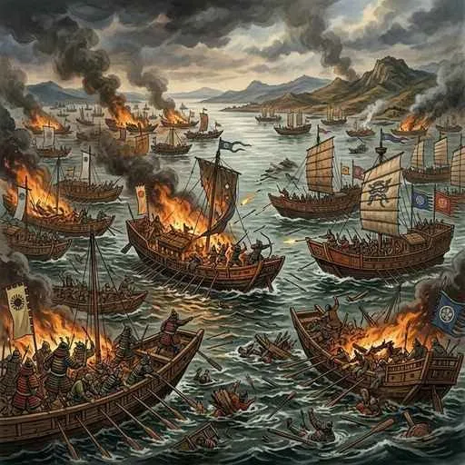
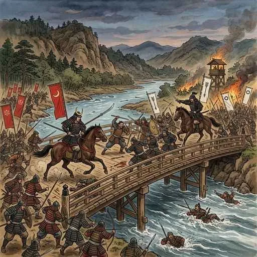
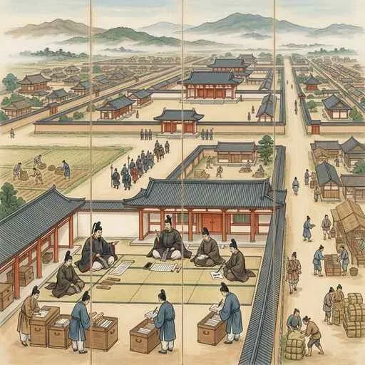
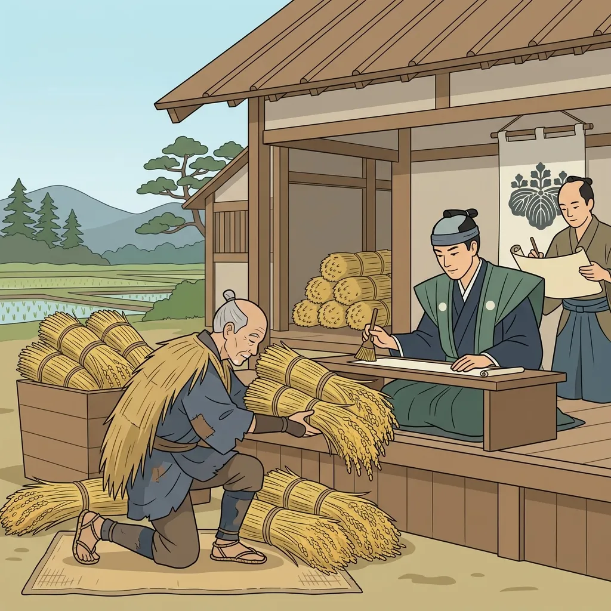
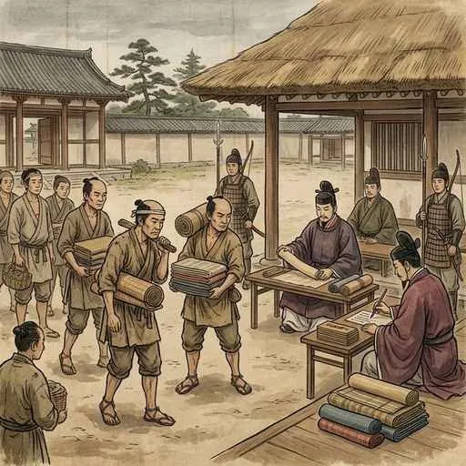
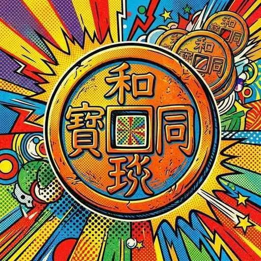

6. 律令国家の形成
聖徳太子が亡くなった後、力を強めすぎた蘇我氏によって、天皇中心の政治は危機に瀕していました。これに対して立ち上がったのが、中大兄皇子と中臣鎌足です。今回は、クーデターから始まった「大化の改新」、緊迫する東アジア情勢の中での「白村江の戦い」、皇位をめぐる古代最大の内乱「壬申の乱」、と法に基づく国家体制を完成させた「大宝律令」と「租・調・庸」などの税の仕組みを詳しく解説します！
1. 蘇我氏の打倒と「大化の改新」
645年、皇族の中大兄皇子（なかのおおえのおうじ）と、中堅豪族の中臣鎌足（なかとみのかまたり）らが協力し、権力を独占していた蘇我入鹿（そがのいるか）を皇居で暗殺するクーデターを起こしました（この事件を乙巳の変（いっしのへん）と呼びます）。これにより、蘇我氏の本家は滅亡しました。
この事件をきっかけに始まった一連の政治改革を大化の改新（たいかのかいしん）と呼びます。この時、日本で初めての元号（年号）である「大化」が定められました。

図1：蘇我氏を倒し、新しい天皇中心の国家づくりを始めた「大化の改新」のイメージ
図2：中大兄皇子の右腕として改革を主導し、のちに「藤原（ふじわら）」の姓を授けられた「中臣鎌足」
① 土地と人民を国のものとする「公地公民」
大化の改新の最も重要なスローガンが公地公民（こうちこうみん）です。それまで豪族たちが私有していた土地（田荘・たどころ）や人民（部民・べみん）をすべて取り上げ、すべて国家（天皇）のものにするという方針を示しました。これは、豪族の力を抑え込み、国が直接人民を支配して税を集めるための大改革でした。

図3：豪族による私有を廃止し、すべて国家の財産・人民とした「公地公民」のイメージ
2. 朝鮮半島の緊迫と「白村江の戦い」
改革の途中、日本を揺るがす国際的な大事件が発生します。当時、朝鮮半島では、中国の「唐」と半島南部の「新羅」が同盟（唐・新羅連合軍）を組み、日本と親しかった「百済（くだら）」を滅ぼしてしまいました。
日本は百済の復興を支援するため、大軍を朝鮮半島へ派遣しましたが、663年、白村江の戦い（はくすきのえのたたかい／はくそんこうのたたかい）において、唐・新羅の連合軍に歴史的な大敗を喫しました。

図4：唐・新羅の連合軍の圧倒的な戦力の前に日本軍が大敗した「白村江の戦い」
① 防備の強化と大宰府・防人の設置
大敗した日本は、「次は唐や新羅が日本列島に攻めてくるのではないか」と恐れ、西日本の防備を急ピッチで強化しました。
- 九州の警備や外交の窓口として大宰府（だざいふ）を築き、その周囲に防衛用の巨大な土塁（水城）を作りました。
- 東国（関東地方など）から兵士を集め、九州北部の沿岸を警備させる防衛軍防人（さきもり）を配置しました。
その後、中大兄皇子は都を安全な内陸の大津（滋賀県）へ移し、正式に即位して天智天皇（てんじてんのう）となりました。天智天皇は、日本で最初の全国的な戸籍である「庚午年籍（こうごねんじゃく）」を作成し、公地公民に基づく税制度の土台を作りました。
図5：白村江の戦いの敗戦を乗り越え、即位して日本初の全国的な戸籍を作った「天智天皇（中大兄皇子）」
3. 皇位継承争い「壬申の乱」と「藤原京」の造営
天智天皇が亡くなると、今度は次の天皇の位をめぐって皇族内で古代最大の内乱が勃発します。672年に起きた壬申の乱（じんしんのらん）です。
天智天皇の弟である大海人皇子（おおあまのおうじ）が、天智天皇の息子である大友皇子（おおとものおうじ）と対立し、地方の豪族たちを味方につけて反乱を起こしました。この激しい内乱に勝利した大海人皇子は、都を再び飛鳥に戻し、天武天皇（てんむてんのう）として即位しました。

図6：皇位継承をめぐって親族どうしが戦い、大海人皇子が勝利した「壬申の乱」のイメージ
天武天皇は、内乱を勝ち抜いたことで非常に強力な権力を手に入れ、貴族や豪族に口を出させない「天皇絶対」の政治を進めました。天武天皇の死後、その意思を継いで即位した皇后の持統天皇（じとうてんのう）は、中国の都にならった本格的な都である藤原京（ふじわらきょう）（奈良県）を造営し、遷都しました。
図7：天武天皇の政治を引き継ぎ、本格的な碁盤の目の都「藤原京」を完成させた「持統天皇」
4. 律令国家の完成（大宝律令の制定）
701年、唐の優れた法律にならって、日本の社会に適合させた本格的な法典大宝律令（たいほうりつりょう）が制定されました（天武天皇の息子である舎人親王や、中臣鎌足の息子である藤原不比等らが中心となって作成しました）。
「律」は刑罰のきまり（今でいう刑法）、「令」は政治の仕組みや役人の役割、人々の税や労働のきまり（今でいう行政法や民法など）を指します。この大宝律令の制定によって、日本はついに法に基づいて支配される律令国家（りつりょうこっか）としての形を完成させました。
図8：刑罰を定める「律」と政治を定める「令」を体系化した「大宝律令」のイメージ

図9：天皇のもとに二官八省の役所を置き、全国を組織的に支配した「律令国家」の構造イメージ
① 口分田を分け与える「班田収授法」
律令制度のもとでは、政府は作成した戸籍に基づいて、6歳以上のすべての男女に国から田んぼである口分田（くぶんでん）を分け与え、その人が死ぬと国に田んぼを返還させる班田収授法（はんでんしゅうじゅのほう）を行いました。
図10：戸籍に登録されたすべての人々に耕作地を割り当てた班田収授のイメージ
② 重い農民の税負担（租・調・庸）
口分田を分け与えられた農民たちには、その見返りとして、非常に重い税の義務が課されました。その主な負担は以下の通りです。
- 租（そ）：口分田の収穫量のうち、約3％の稲を納める税です（地元地方の倉に保管されました）。
- 調（ちょう）：絹や布、または地方の特産品（塩、魚、紙など）を納める税です（自分たちで都まで運ぶ必要がありました）。
- 庸（よう）：都での年間10日間の労働（労役）の代わりに、麻布（布）を納める税です（都まで運ぶ必要がありました）。
- 防人（さきもり）：東国の男性を中心に集められ、九州北部を警備する兵役です（現地までの旅費も自己負担でした）。
- 雑徭（ぞうよう）：地方の国司の命令により、道路やため池の工事などに年間60日以内で駆り出される労役です。
特に「調」や「庸」は、農民が自費で都まで運ばなければならず（これを運脚（うんきゃく）と呼びます）、その道中で行き倒れて命を落とす農民が後を絶ちませんでした。このあまりにも重い税負担から逃れるため、農民の中には自分の田んぼを捨てて山へ逃げ出す者（逃散・ちょうさん）や、戸籍の性別を偽って税を逃れようとする者（偽籍）が続出するようになりました。

図11：収穫した稲を計量し、税として地元の倉へ納める「租」のイメージ

図12：都への労働の代わりに麻布などを納めさせられた「庸」や特産品を納める「調」のイメージ
③ 日本初の本格的な流通貨幣「和同開珎」
708年、日本で豊かな銅山が発見されたことを記念し、唐の貨幣（開元通宝）にならって、日本で最初の本格的な流通貨幣である和同開珎（わどうかいちん）が鋳造されました。政府はこれを使って役人に給料を支払ったり、都（平城京）の建設費用を払ったりして、貨幣の流通を促進させようとしました。

図13：中央に四角い穴が開いた、日本初の本格的な流通青銅貨「和同開珎」
🔥 定期テスト完全攻略！「律令国家の形成」重要キーワードまとめ
テストで必ず問われる重要語句の違いをまとめました。整理して確実に得点をゲットしましょう！
① 「大化の改新（645年）」と「壬申の乱（672年）」の違い
| 出来事 | 何が起きたか？ | その後の影響 |
|---|---|---|
| 大化の改新 | 中大兄皇子らが蘇我氏を倒した政治改革。 | 公地公民の方針が示され、天皇中心の政治の土台が作られた。 |
| 壬申の乱 | 天智天皇の死後に起きた皇位継承をめぐる内乱。 | 大海人皇子が勝利し、天武天皇として天皇絶対の強力な支配体制を築いた。 |
② 「租・調・庸」の負担内容
・租：稲（米）の3%を地元の地方に納める（男女全員が負担）。
・調：絹や布、地方の特産品を都まで自費で運んで納める（成人男性のみ）。
・庸：労働の代わりに布（麻布）を都まで自費で運んで納める（成人男性のみ）。
③ 防衛に関するキーワード
・大宰府：白村江の戦いの後、九州の防備と外交のために築かれた役所。
・防人：主に東国から集められ、九州北部を警備した兵役（農民にとって過酷な負担）。